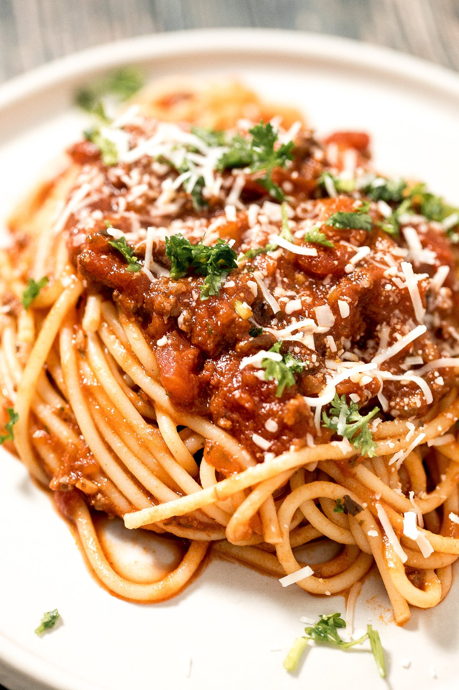

Spaghetti

Description
Spaghetti is one of those feel good foods that always taste delicious!
This recipe whips ups a quick batch of spaghetti in less than an hour, and
works equally well with ground beef or turkey. You can play around with the
vegetables too...add celery, bell peppers, or mushrooms to increase the vegetable
content, or simply use tomatoes and onions.
- 1 white or yellow onion
- 3 cloves of garlic
- 1-2 cups chopped vegetables (bell peppers, mushrooms, celery) - optional
- 1 Tbsp olive oil
- 1 lb ground beef or turkey
- 1 5-oz can tomato paste
- 1 14.5-oz can diced tomatoes
- 2 tsp dried basil
- 1/2 tsp. dried thyme
- Salt, to taste
- 1 tsp. black pepper
- 16 oz. spaghetti noodles
- Chop onions, garlic, and other vegetables, if using.
- Heat saucepan over medium-high heat. Add oil to saucepan.
- Once oil is hot (2-3 minutes), add onion, and cook 5 minutes, stirring infrequently.
- Add garlic, and cook 30 seconds more.
- Add additional vegetables, if using. Cook until softened (3-5 minutes).
- Add meat and cook until browned.
- Add tomato paste and diced tomatoes, mixing thoroughly.
- Raise heat and bring to a boil, then cover and simmer for 30 minutes.
- Add basil, thyme, black pepper, and salt to sauce.
- While sauce is simmering, cook spaghetti noodles per packaging instructions.
- Check sauce. Add salt to taste, if needed.
- Mix noodles and sauce immediately before serving.